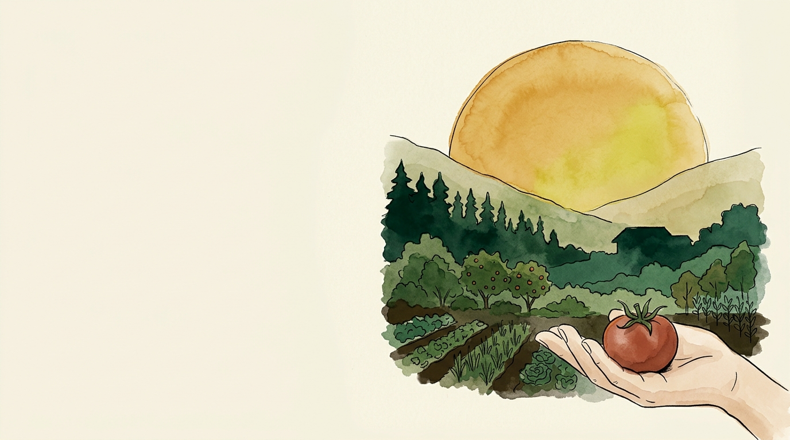

Cada vuelta es
plata que no sale
Cuánta energía entra, cuánta se queda y cuántas veces trabaja.
Ya tienes la fábrica.
Falta ver para quién
trabaja.
Suelo vivo, qué sembrar y agua que se queda. Este principio mide si todo eso rinde para ti o para el proveedor de insumos.
Los 7 principios de
inmunidad del bosque
Hoy entra el animal al diseño, que es la pieza que cierra todos los ciclos anteriores.

El bosque no compra nada
y produce más que
tu finca.
Recibe la misma luz, la misma lluvia y el mismo suelo. La diferencia está en cuántas veces usa cada cosa antes de soltarla.
El flujo de energía en una finca


Lo que llega al plato
Nadie va a subir ese 2,5 % inicial. Todo el juego está en lo que pasa después.
La energía entra por una sola puerta

¿Cuánta aprovechamos,
cuánta devolvemos
y cuánta destruimos?
Quemar el rastrojo, vender la gallinaza, dejar el lote desnudo, sacar la guadaña. Toda decisión de manejo responde esas tres preguntas, aunque nadie las haya pensado así.
Cuánta energía le quitamos al ecosistema

Cuánta biomasa se queda adentro
Vender el cien por ciento de lo que produces es descapitalización con factura diferida.
Cinco estrategias
para hacerla dar vueltas
De la teoría al diseño. Cada una es una decisión que puedes tomar esta misma semana.
La brújula espacial de la finca

Qué decides para que la energía circule
- Multiplicar la captura: policultivos en toda la columna de luz.
- Cerrar los ciclos: lo que sale de un proceso entra a otro.
- Medir el retorno, no solo la salida.
- Cambiar fertilizante fósil por fijación biológica.
- Cambiar agroquímico por infraestructura viva.
Las cinco en una sola tabla


Cómo da vueltas la energía en esta finca
- El agua residual tratada riega el pasto de corte y el banco de proteína.
- Ese pasto se convierte en cordero, en huevo y en leche.
- El estiércol sale del corral con el cisco y entra al bocashi.
- El bocashi vuelve a la terraza y alimenta la hortaliza.
Cuatro vueltas de la misma energía antes de salir por la puerta como comida vendida.
El animal cierra
el ciclo
Cuántos animales aguanta tu área y en qué condiciones. La cuenta se hace hoy, con lo que ya tienes medido.

Hay biomasa que
nadie se va a comer
Rastrojo, hoja de plátano, guadaña, tusa, cáscara, pasto que se pasó de punto. Energía capturada que nunca entra al mercado.
El animal es la única máquina que la convierte en producto de alto valor sin gastar combustible. Y lo hace esta semana, mientras el compost tarda meses.
Cuánto come tu hato, en materia fresca
Esa es la regla diaria. Lo demás es multiplicar. En La Huerta son 38 animales activos, 1.600 kg de hato y 160 kg de comida al día.
Cuántos animales aguanta tu área
- Cortas y pesas un metro cuadrado de pasto en punto de entrada.
- Multiplicas por los metros de potrero que tienes.
- Divides entre el 10 % del peso vivo de un animal.
- Ese número son los animales-día que te da el potrero.
La condición es tan importante como el número: agua en cada potrero, sombra en los callejones y mano de obra para mover la cerca.
Tres plantas que reemplazan el concentrado
Se siembra por esqueje y produce una barbaridad de biomasa. Es el que de verdad reemplaza concentrado en corderos.
Bulbos sembrados en línea, hoja grande, corte cada 15 días. Similar al maíz en proteína.
King Grass y similares. Acá se riega con el agua residual tratada.
Siémbralos cerca del corral: cada metro de acarreo es energía tuya que se va.
Dosis por especie
| Animal | Dosis diaria | Tope | Lo que se ve |
|---|---|---|---|
| Gallinas ponedoras | 20 g por ave | de ~120 g de consumo | Hasta 15 % menos concentrado |
| Corderos | 50 g por animal | 20 % máximo | Complementa botón de oro |
| Cerdos | 10 a 12 % de la ración | 20 % máximo | Con salvado y melaza extra |
Los líquidos ácidos nunca van en el agua de bebida: el pH bajo les afecta gravemente.

El estiércol sale
activado
- Se descompone más rápido en el potrero y en la compostera.
- Sale del corral ya mezclado con el cisco de la cama.
- Es el 55 % de la receta del bocashi.
Sin animal, ese 55 % hay que comprarlo. Ahí está la vuelta completa.

Lo que sostiene una finca que recircula
Y carbono neutro en alcances 1 y 2 por el aumento de materia orgánica del suelo, sin comprar un solo bono.
De 280 a 20 kilos
No se compró una máquina para lograrlo. Se dejó de sacar lo que servía adentro.
Cuatro pasos para saber cuánta te llevas

Pastoreo Racional Voisin en La Huerta
Medición de rebrote en los potreros, tiempos de recuperación y cargas. La teoría completa va la próxima semana.
Cinco ideas fuerza para el diseño

Define tu módulo
pecuario inicial.
- Qué especie y cuántos animales según el área que tienes.
- Cuántas horas semanales de mano de obra puedes dedicarle.
- Dónde quedaría el banco de proteína y a qué distancia del corral.
- Lista la biomasa que hoy sale de tu finca sin venderse.
Formulario en la comunidad · antes del próximo miércoles
Principio 7 · Descanso
Parar a tiempo también es producir
La energía ya da vueltas. Falta saber cuándo parar: recuperación de lotes, descanso como fertilidad y el pastoreo racional completo.
Cerramos con el taller de integración sobre fincas reales del grupo. Trae la tuya lista para mostrarla.